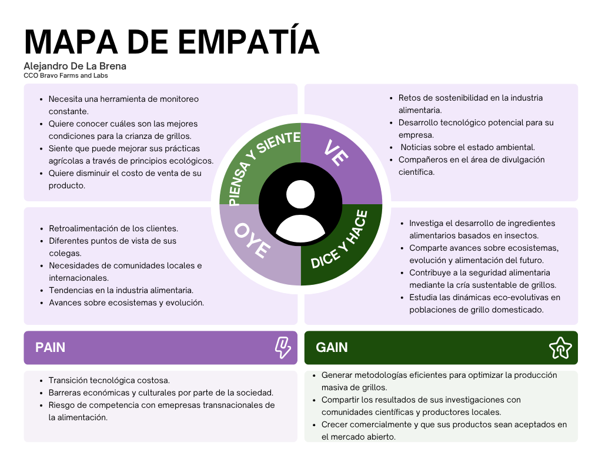
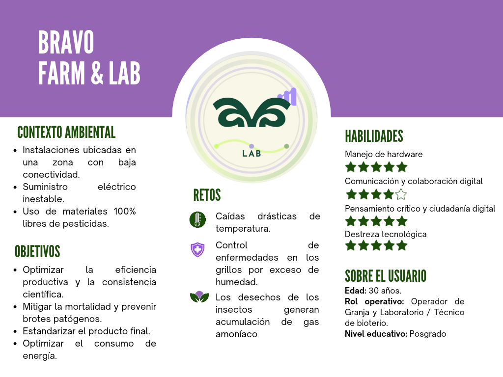
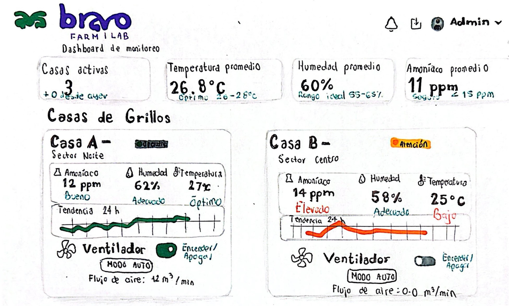
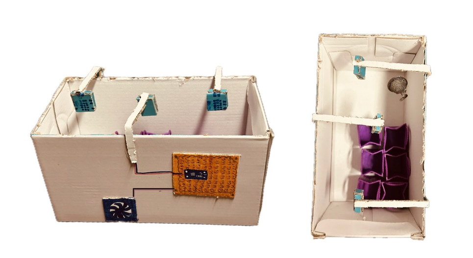

ACTIVIDAD FINAL
Antonio Arzate Romero · Diana Laura De La Torre Trueba · Bruno García Campa
Implementación de Internet de las Cosas · 25/11/2026
CONOCE A ALEJANDRO



HISTORIAS DE USUARIO
HISTORIA 1LECTURA DE ESTADO ACTUAL
Clic para ver
Clic para ver
HISTORIA 1Como operador de granja y laboratorio, quiero ver de un vistazo el estado actual de un domicilio (temperatura, humedad y nivel de amoniaco) para saber si todo está en orden, detectar problemas a tiempo y decidir qué acción tomar durante mi ronda sin revisar varias pantallas.
CRITERIOS DE ACEPTACIÓN• El operador tarda menos de 1 minuto en interpretar las lecturas de un domicilio.
• El operador califica la legibilidad de la interfaz por encima de 80.
CRITERIOS DE ACEPTACIÓN• El operador tarda menos de 1 minuto en interpretar las lecturas de un domicilio.
• El operador califica la legibilidad de la interfaz por encima de 80.
HISTORIA 2PRIMERA VEZ EN INTERFAZ DEL SISTEMA
Clic para ver
Clic para ver
HISTORIA 2Como operador de Granja y Laboratorio, quiero aprender de forma intuitiva y rápida a navegar en la interfaz del sistema para observar el estado de la granja de manera veloz y eficaz.
CRITERIOS DE ACEPTACIÓN• Un operador nuevo falla en menos del 30 % del total de clics al realizar todas las tareas básicas.
• Un operador nuevo completa tareas básicas (abrir un domicilio, leer su estado y cambiar de criadero) en menos de 3 minutos.
CRITERIOS DE ACEPTACIÓN• Un operador nuevo falla en menos del 30 % del total de clics al realizar todas las tareas básicas.
• Un operador nuevo completa tareas básicas (abrir un domicilio, leer su estado y cambiar de criadero) en menos de 3 minutos.
IMAGEN DEL SISTEMA
Captura o foto de la interfaz digital y física
LEYES COGNITIVAS / GESTALT1) …
2) …
3) …
MODELO DEL DISEÑADOR ↔ MODELO DEL USUARIO…
2) …
3) …
MODELO DEL DISEÑADOR ↔ MODELO DEL USUARIO…
IMAGEN DEL SISTEMA
HISTORIA 1Nombre corto de la historia
Clic para ver
Clic para ver
HISTORIA 1Como … quiero … para …
CRITERIOS DE ACEPTACIÓN• …
• …
CRITERIOS DE ACEPTACIÓN• …
• …
HISTORIA 2Nombre corto de la historia
Clic para ver
Clic para ver
HISTORIA 2Como … quiero … para …
CRITERIOS DE ACEPTACIÓN• …
• …
CRITERIOS DE ACEPTACIÓN• …
• …
ESPECIFICACIONES DE USABILIDAD
| Atributo | Métrica | Peor caso | Meta |
|---|---|---|---|
| Eficiencia | Tiempo en segundos para interpretar las lecturas de temperatura, humedad y nivel de amoniaco de un domicilio sin asistencia del facilitador | Más de 300 segundos (5 minutos) | Menos de 60 segundos (1 minuto) |
| Satisfacción | Porcentaje de calificación de satisfacción reportado por el usuario/cliente tras interactuar con la interfaz | Menos del 70 % | 80 % o superior |
EVOLUCIÓN Y VALIDACIÓN


Versión final
MAGO DE OZEn la prueba, el invitado buscó el amoniaco dentro del ícono de temperatura porque los tres íconos tenían el mismo peso visual y ninguno señalaba cuál estaba fuera de rango. En la nueva versión, la variable en alerta aparecerá más grande, con texto (“Amoniaco alto”) y con su unidad (ppm) junto al valor. Así el operador sabrá dónde tocar sin adivinar, y esperamos reducir el error como el tiempo de interpretación.
MEMORIA Y PROCESAMIENTO
Diagrama: ¿qué componente hace de CPU?
CPU…
RAM (volátil)…
ALMACENAMIENTO (persistente)…
RAM (volátil)…
ALMACENAMIENTO (persistente)…
FLUJO DE E/S
CAPA DE ABSTRACCIÓN
NODO EMBEBIDO… (firmware / RTOS)
SERVIDOR… (Linux / Windows)
SERVIDOR… (Linux / Windows)
PROCESOS, HILOS E IPC
Diagrama: procesos, hilos y flechas de comunicación
PROCESOS AISLADOS…
HILOS…
IPC (sockets, colas, tuberías…)…
HILOS…
IPC (sockets, colas, tuberías…)…
RIESGOS Y SINCRONIZACIÓN
RIESGO 1…
MECANISMO…
MECANISMO…
RIESGO 2…
MECANISMO…
MECANISMO…
UX ↔ SISTEMA
DECISIÓN TÉCNICA INTERNA…
EFECTO EN EL USUARIO…